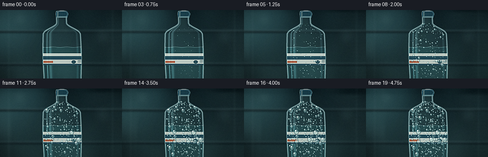
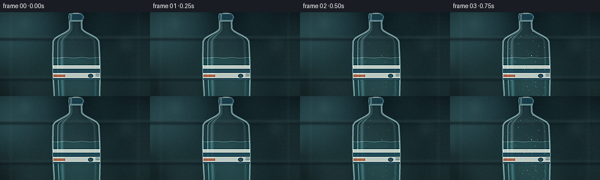

CODING AGENTS AS PIXEL WORLD MODELS
traex/DeepSeek-V4.1-Flash · phygen_115
点击播放 · 原生 RGB 像素
逐轮保存的候选
回放视频、检查图与代码变化。
每份候选均可单独播放。实际图片检查记录在下方工具轨迹中。
候选 01播放与检查图
点击播放 · 原生 RGB 像素


展开代码变化
--- 上一保存版本
+++ 本次保存版本
@@ -0,0 +1,357 @@
+from pathlib import Path
+
+import numpy as np
+from PIL import Image, ImageDraw, ImageFilter
+from scipy.ndimage import gaussian_filter
+
+import artifact_io
+
+
+WIDTH = 256
+HEIGHT = 144
+FRAMES = 20
+FPS = 4.0
+SCALE = 4
+W = WIDTH * SCALE
+H = HEIGHT * SCALE
+CASE_DIR = Path(__file__).resolve().parent
+
+
+def smoothstep(value):
+ value = np.clip(value, 0.0, 1.0)
+ return value * value * (3.0 - 2.0 * value)
+
+
+def make_background():
+ y = np.linspace(0.0, 1.0, H, dtype=np.float32)[:, None]
+ top = np.array([10, 24, 28], dtype=np.float32)
+ bottom = np.array([28, 46, 47], dtype=np.float32)
+ field = top[None, None, :] + (bottom - top)[None, None, :] * y[:, :, None]
+ image = np.broadcast_to(field, (H, W, 3)).copy()
+
+ # A cold source just outside the upper-left edge.
+ yy, xx = np.mgrid[0:H, 0:W].astype(np.float32)
+ glow = np.exp(-(((xx / W - 0.02) / 0.36) ** 2 + ((yy / H - 0.08) / 0.52) ** 2))
+ image += glow[:, :, None] * np.array([31, 53, 54], dtype=np.float32)
+
+ rng = np.random.default_rng(9021)
+ texture = rng.normal(0.0, 1.0, (24, 44)).astype(np.float32)
+ texture = gaussian_filter(texture, sigma=3.2)
+ texture = (texture - texture.min()) / (np.ptp(texture) + 1e-6)
+ texture = np.asarray(
+ Image.fromarray((texture * 255).astype(np.uint8)).resize((W, H), Image.Resampling.BICUBIC),
+ dtype=np.float32,
+ ) / 255.0
+ image += (texture[:, :, None] - 0.5) * np.array([7, 13, 13], dtype=np.float32)
+
+ base = Image.fromarray(np.clip(image, 0, 255).astype(np.uint8), "RGB")
+ draw = ImageDraw.Draw(base, "RGBA")
+
+ # Blurred refrigerator shelving and a faint rear rack establish the room.
+ for y0 in (43, 112):
+ draw.rectangle((0, y0 * SCALE, W, (y0 + 5) * SCALE), fill=(15, 28, 31, 205))
+ draw.line((0, y0 * SCALE, W, y0 * SCALE), fill=(113, 145, 145, 80), width=2 * SCALE)
+ draw.line((0, (y0 + 4) * SCALE, W, (y0 + 4) * SCALE), fill=(5, 15, 18, 160), width=2 * SCALE)
+ for x0 in (18, 236):
+ draw.line((x0 * SCALE, 0, x0 * SCALE, H), fill=(112, 141, 140, 32), width=2 * SCALE)
+ for y0 in range(9, 141, 8):
+ draw.line((224 * SCALE, y0 * SCALE, 250 * SCALE, y0 * SCALE), fill=(101, 132, 132, 16), width=SCALE)
+
+ # Defocused refrigerator lamps.
+ lamps = Image.new("RGBA", (W, H), (0, 0, 0, 0))
+ lamp_draw = ImageDraw.Draw(lamps, "RGBA")
+ for cx, cy, radius, color in (
+ (42, 19, 13, (163, 209, 206, 58)),
+ (215, 55, 17, (142, 190, 190, 35)),
+ (29, 102, 8, (177, 214, 204, 25)),
+ ):
+ lamp_draw.ellipse(
+ ((cx - radius) * SCALE, (cy - radius) * SCALE, (cx + radius) * SCALE, (cy + radius) * SCALE),
+ fill=color,
+ )
+ lamps = lamps.filter(ImageFilter.GaussianBlur(10 * SCALE))
+ base = Image.alpha_composite(base.convert("RGBA"), lamps)
+ base = base.filter(ImageFilter.GaussianBlur(1.7 * SCALE))
+ return base.convert("RGB")
+
+
+def bottle_half_width(y):
+ y = np.asarray(y, dtype=np.float32)
+ shoulder = 10.5 + 27.5 * smoothstep((y - 27.0) / 22.0)
+ body = 39.0 + 1.3 * np.sin(np.clip((y - 48.0) / 92.0, 0, 1) * np.pi)
+ return np.where(y < 27.0, 10.5, np.where(y < 49.0, shoulder, body))
+
+
+def bottle_center(y):
+ return 130.0 + 0.018 * (np.asarray(y, dtype=np.float32) - 70.0)
+
+
+def bottle_mask():
+ yy, xx = np.mgrid[0:H, 0:W].astype(np.float32)
+ xb = xx / SCALE + 0.5 / SCALE
+ yb = yy / SCALE + 0.5 / SCALE
+ cx = bottle_center(yb)
+ hw = bottle_half_width(yb)
+ inside = (yb >= 3.0) & (np.abs(xb - cx) <= hw)
+ # Round the tiny cap and soften the shoulder into the body.
+ cap = (yb >= 2.0) & (yb < 16.0) & (((xb - 130.0) / 12.2) ** 2 + ((yb - 8.6) / 6.8) ** 2 <= 1.0)
+ inside |= cap
+ return inside.astype(np.float32)
+
+
+def bottle_layers(mask):
+ yy, xx = np.mgrid[0:H, 0:W].astype(np.float32)
+ xb = xx / SCALE
+ yb = yy / SCALE
+ cx = bottle_center(yb)
+ hw = np.maximum(bottle_half_width(yb), 1.0)
+ side = np.clip((xb - cx) / hw, -1.0, 1.0)
+
+ # Broad clear-PET transmission with a cool rim.
+ body = np.zeros((H, W, 4), dtype=np.float32)
+ body[:, :, 0] = 86 + 30 * (1.0 - side * side)
+ body[:, :, 1] = 132 + 36 * (1.0 - side * side)
+ body[:, :, 2] = 139 + 29 * (1.0 - side * side)
+ body[:, :, 3] = mask * (24.0 + 18.0 * (1.0 - side * side))
+
+ edge = np.clip(gaussian_filter(mask, 1.1 * SCALE) * (1.0 - gaussian_filter(mask, 1.1 * SCALE)) * 5.2, 0, 1)
+ body[:, :, 0] += edge * 132
+ body[:, :, 1] += edge * 154
+ body[:, :, 2] += edge * 150
+ body[:, :, 3] += edge * 112
+
+ # Left specular stripe and a quieter reflection on the right.
+ left_band = np.exp(-((side + 0.62) / 0.075) ** 2)
+ fine_band = np.exp(-((side + 0.79) / 0.025) ** 2)
+ right_band = np.exp(-((side - 0.80) / 0.045) ** 2)
+ highlight = mask * (left_band * 58 + fine_band * 98 + right_band * 34)
+ body[:, :, 0] += highlight * 0.77
+ body[:, :, 1] += highlight * 0.93
+ body[:, :, 2] += highlight * 0.94
+ body[:, :, 3] += highlight
+
+ # A subtle water volume makes the plastic read as cold and full.
+ waterline = 78.0
+ water = np.clip((yb - waterline) / 1.5, 0.0, 1.0) * mask
+ body[:, :, 0] -= water * 24
+ body[:, :, 1] += water * 7
+ body[:, :, 2] += water * 8
+ body[:, :, 3] += water * 21
+ meniscus = np.exp(-((yb - waterline - 0.5 * np.sin((xb - 90.0) * 0.22)) / 0.65) ** 2) * mask
+ body[:, :, 0] += meniscus * 70
+ body[:, :, 1] += meniscus * 86
+ body[:, :, 2] += meniscus * 82
+ body[:, :, 3] += meniscus * 55
+
+ return np.clip(body, 0, 255)
+
+
+def render_label(mask):
+ layer = Image.new("RGBA", (W, H), (0, 0, 0, 0))
+ draw = ImageDraw.Draw(layer, "RGBA")
+ top, bottom = 91.0, 116.0
+ draw.rectangle(
+ (86 * SCALE, top * SCALE, 178 * SCALE, bottom * SCALE),
+ fill=(224, 231, 222, 211),
+ )
+ draw.rectangle((86 * SCALE, 97 * SCALE, 178 * SCALE, 104 * SCALE), fill=(35, 74, 87, 225))
+ draw.rectangle((86 * SCALE, 113 * SCALE, 178 * SCALE, 116 * SCALE), fill=(44, 78, 89, 230))
+ draw.rectangle((91 * SCALE, 107 * SCALE, 111 * SCALE, 111 * SCALE), fill=(203, 104, 70, 218))
+ draw.ellipse((150 * SCALE, 105.5 * SCALE, 159 * SCALE, 112.5 * SCALE), fill=(45, 83, 95, 150))
+ draw.line((163 * SCALE, 106 * SCALE, 173 * SCALE, 106 * SCALE), fill=(62, 95, 103, 140), width=SCALE)
+ draw.line((163 * SCALE, 109 * SCALE, 171 * SCALE, 109 * SCALE), fill=(62, 95, 103, 115), width=SCALE)
+
+ alpha = np.asarray(layer.getchannel("A"), dtype=np.float32) / 255.0
+ alpha *= mask
+ layer.putalpha(Image.fromarray(np.clip(alpha * 255, 0, 255).astype(np.uint8)))
+ return layer
+
+
+def render_cap():
+ layer = Image.new("RGBA", (W, H), (0, 0, 0, 0))
+ draw = ImageDraw.Draw(layer, "RGBA")
+ draw.rounded_rectangle(
+ (118 * SCALE, 3 * SCALE, 142 * SCALE, 16 * SCALE),
+ radius=2.5 * SCALE,
+ fill=(31, 78, 94, 244),
+ )
+ draw.rectangle((119 * SCALE, 13 * SCALE, 141 * SCALE, 16 * SCALE), fill=(104, 143, 148, 230))
+ for x in np.arange(120.5, 141.0, 2.2):
+ draw.line((x * SCALE, 4 * SCALE, x * SCALE, 13 * SCALE), fill=(8, 43, 57, 80), width=SCALE)
+ draw.line((121 * SCALE, 4 * SCALE, 121 * SCALE, 14 * SCALE), fill=(178, 211, 207, 105), width=2 * SCALE)
+ return layer
+
+
+def make_drops(rng):
+ drops = []
+
+ def add_drop(rmax, start, grow, elongation):
+ y = rng.uniform(28.0, 143.0)
+ hw = float(bottle_half_width(y)) * 0.91
+ cx = float(bottle_center(y))
+ x = cx + rng.uniform(-hw, hw)
+ drops.append((x, y, start, grow, rmax, elongation))
+
+ for _ in range(235):
+ add_drop(rng.uniform(0.35, 0.9), rng.uniform(0.00, 0.82), rng.uniform(0.12, 0.25), rng.uniform(1.0, 1.16))
+ for _ in range(116):
+ add_drop(rng.uniform(0.8, 1.55), rng.uniform(0.02, 0.72), rng.uniform(0.18, 0.34), rng.uniform(1.02, 1.22))
+ for _ in range(64):
+ add_drop(rng.uniform(1.45, 2.7), rng.uniform(0.05, 0.65), rng.uniform(0.23, 0.43), rng.uniform(1.05, 1.30))
+ for _ in range(24):
+ add_drop(rng.uniform(2.7, 4.9), rng.uniform(0.12, 0.58), rng.uniform(0.30, 0.50), rng.uniform(1.08, 1.36))
+ return drops
+
+
+def draw_drop(layer, x, y, radius, elongation):
+ draw = ImageDraw.Draw(layer, "RGBA")
+ rx = max(radius, 0.16)
+ ry = rx * elongation
+ sx, sy = x * SCALE, y * SCALE
+ srx, sry = rx * SCALE, ry * SCALE
+ if radius < 0.34:
+ draw.ellipse(
+ (sx - srx, sy - sry, sx + srx, sy + sry),
+ fill=(206, 237, 231, int(80 + radius * 90)),
+ )
+ return
+
+ # Dark refractive rim, translucent body, and a high-contrast lens highlight.
+ draw.ellipse(
+ (sx - 1.12 * srx, sy - 1.08 * sry, sx + 1.12 * srx, sy + 1.10 * sry),
+ fill=(12, 37, 43, 104),
+ )
+ draw.ellipse(
+ (sx - 0.94 * srx, sy - 0.92 * sry, sx + 0.94 * srx, sy + 0.92 * sry),
+ fill=(88, 145, 148, 138),
+ )
+ draw.ellipse(
+ (sx - 0.76 * srx, sy - 0.78 * sry, sx + 0.72 * srx, sy + 0.70 * sry),
+ fill=(177, 219, 215, 113),
+ )
+ if radius > 0.75:
+ hx = sx - 0.35 * srx
+ hy = sy - 0.38 * sry
+ hr = max(0.32 * min(srx, sry), 0.8)
+ draw.ellipse((hx - hr, hy - hr, hx + hr, hy + hr), fill=(245, 255, 250, 224))
+ if radius > 2.4:
+ draw.ellipse(
+ (sx + 0.26 * srx, sy + 0.26 * sry, sx + 0.55 * srx, sy + 0.50 * sry),
+ fill=(231, 250, 244, 60),
+ )
+
+
+def render_condensation(t, mask, drops):
+ layer = Image.new("RGBA", (W, H), (0, 0, 0, 0))
+ for x, y, start, grow, rmax, elongation in drops:
+ progress = float(smoothstep((t - start) / grow))
+ if progress <= 0.0:
+ continue
+ radius = 0.10 + rmax * progress
+ if radius < 0.20:
+ continue
+ draw_drop(layer, x, y, radius, elongation)
+
+ # Short runoff trails grow downward near the end of the timelapse.
+ rng = np.random.default_rng(773)
+ trails = [
+ (111.0, 77.0, 0.45, 41.0),
+ (151.0, 83.0, 0.53, 33.0),
+ (142.0, 68.0, 0.62, 48.0),
+ (102.0, 92.0, 0.66, 31.0),
+ (160.0, 58.0, 0.73, 56.0),
+ ]
+ draw = ImageDraw.Draw(layer, "RGBA")
+ for x0, y0, start, length in trails:
+ p = float(smoothstep((t - start) / 0.24))
+ if p <= 0.0:
+ continue
+ y1 = y0 + length * p
+ points = []
+ for y in np.linspace(y0, y1, 10):
+ x = x0 + 0.45 * np.sin((y - y0) * 0.21 + x0 * 0.1)
+ points.append((x * SCALE, y * SCALE))
+ draw.line(points, fill=(181, 226, 222, 62), width=max(SCALE, int(0.65 * SCALE)), joint="curve")
+ draw.line(points, fill=(235, 251, 246, 70), width=max(1, int(0.22 * SCALE)), joint="curve")
+ bead_r = 1.3 + 0.45 * np.sin(x0)
+ draw_drop(layer, points[-1][0] / SCALE, points[-1][1] / SCALE, bead_r, 1.28)
+
+ alpha = np.asarray(layer.getchannel("A"), dtype=np.float32) / 255.0
+ alpha *= mask
+ layer.putalpha(Image.fromarray(np.clip(alpha * 255, 0, 255).astype(np.uint8)))
+ return layer
+
+
+def render_fog(frame_index, base):
+ rng = np.random.default_rng(451)
+ noise = rng.normal(0.0, 1.0, (36, 64)).astype(np.float32)
+ noise = gaussian_filter(noise, sigma=5.0)
+ noise = (noise - noise.min()) / (np.ptp(noise) + 1e-6)
+ shift_x = int(round(frame_index * 0.55))
+ shift_y = int(round(frame_index * 0.16))
+ noise = np.roll(noise, shift_x, axis=1)
+ noise = np.roll(noise, shift_y, axis=0)
+ fog = np.asarray(
+ Image.fromarray((noise * 255).astype(np.uint8)).resize((W, H), Image.Resampling.BICUBIC),
+ dtype=np.float32,
+ ) / 255.0
+ fog = gaussian_filter(fog, 2.0 * SCALE)
+ yy, xx = np.mgrid[0:H, 0:W].astype(np.float32)
+ side_emphasis = 0.38 + 0.62 * smoothstep(np.abs(xx / W - 0.5) / 0.45)
+ fog_alpha = (0.016 + 0.105 * fog) * side_emphasis
+ fog_layer = np.zeros((H, W, 4), dtype=np.float32)
+ fog_layer[:, :, :3] = np.array([160, 202, 198], dtype=np.float32)
+ fog_layer[:, :, 3] = np.clip(fog_alpha * 255.0, 0, 255)
+ result = Image.alpha_composite(base.convert("RGBA"), Image.fromarray(fog_layer.astype(np.uint8), "RGBA"))
+ return result.convert("RGB")
+
+
+def render_frame(frame_index, background, mask, body, label, cap, drops):
+ t = frame_index / (FRAMES - 1)
+ base = Image.alpha_composite(background.convert("RGBA"), Image.fromarray(body.astype(np.uint8), "RGBA"))
+ base = Image.alpha_composite(base, label)
+ base = Image.alpha_composite(base, cap)
+ base = Image.alpha_composite(base, render_condensation(t, mask, drops))
+ base = render_fog(frame_index, base)
+
+ array = np.asarray(base, dtype=np.float32) / 255.0
+ yy, xx = np.mgrid[0:H, 0:W].astype(np.float32)
+ # Gentle photographic grade: cool shadows, neutral highlights, soft vignette.
+ luminance = array @ np.array([0.2126, 0.7152, 0.0722], dtype=np.float32)
+ shadow_tint = np.array([0.90, 1.01, 1.05], dtype=np.float32)
+ tint = shadow_tint + (1.0 - shadow_tint) * smoothstep(luminance * 1.45)[:, :, None]
+ array *= tint
+ vignette = 1.0 - 0.24 * (((xx / W - 0.5) / 0.62) ** 2 + ((yy / H - 0.5) / 0.70) ** 2) ** 1.45
+ array *= np.clip(vignette, 0.68, 1.0)[:, :, None]
+ pulse = 1.0 + 0.018 * np.sin(t * np.pi * 2.0 + 0.4)
+ array = 1.0 - (1.0 - np.clip(array * pulse, 0.0, 1.0)) ** 0.94
+
+ image = Image.fromarray(np.clip(array * 255.0, 0, 255).astype(np.uint8), "RGB")
+ image = image.resize((WIDTH, HEIGHT), Image.Resampling.LANCZOS)
+ image = image.filter(ImageFilter.UnsharpMask(radius=1.0, percent=92, threshold=3))
+
+ out = np.asarray(image, dtype=np.float32)
+ grain_rng = np.random.default_rng(1200 + frame_index)
+ grain = grain_rng.normal(0.0, 1.55, (HEIGHT, WIDTH, 1)).astype(np.float32)
+ out += grain
+ out = np.clip(out, 0, 255).astype(np.uint8)
+ return out
+
+
+def main():
+ background = make_background()
+ mask = bottle_mask()
+ body = bottle_layers(mask)
+ label = render_label(mask)
+ cap = render_cap()
+ rng = np.random.default_rng(815)
+ drops = make_drops(rng)
+ frames = [
+ render_frame(index, background, mask, body, label, cap, drops)
+ for index in range(FRAMES)
+ ]
+ artifact_io.save(np.stack(frames), CASE_DIR)
+
+
+if __name__ == "__main__":
+ main()
候选 02播放与检查图
点击播放 · 原生 RGB 像素
展开代码变化
--- 上一保存版本
+++ 本次保存版本
@@ -44,7 +44,7 @@
) / 255.0
image += (texture[:, :, None] - 0.5) * np.array([7, 13, 13], dtype=np.float32)
- base = Image.fromarray(np.clip(image, 0, 255).astype(np.uint8), "RGB")
+ base = Image.fromarray(np.clip(image, 0, 255).astype(np.uint8))
draw = ImageDraw.Draw(base, "RGBA")
# Blurred refrigerator shelving and a faint rear rack establish the room.
@@ -243,17 +243,7 @@
def render_condensation(t, mask, drops):
layer = Image.new("RGBA", (W, H), (0, 0, 0, 0))
- for x, y, start, grow, rmax, elongation in drops:
- progress = float(smoothstep((t - start) / grow))
- if progress <= 0.0:
- continue
- radius = 0.10 + rmax * progress
- if radius < 0.20:
- continue
- draw_drop(layer, x, y, radius, elongation)
-
- # Short runoff trails grow downward near the end of the timelapse.
- rng = np.random.default_rng(773)
+ # Runoff trails sit behind the beads so drops remain crisp on top.
trails = [
(111.0, 77.0, 0.45, 41.0),
(151.0, 83.0, 0.53, 33.0),
@@ -276,6 +266,15 @@
bead_r = 1.3 + 0.45 * np.sin(x0)
draw_drop(layer, points[-1][0] / SCALE, points[-1][1] / SCALE, bead_r, 1.28)
+ for x, y, start, grow, rmax, elongation in drops:
+ progress = float(smoothstep((t - start) / grow))
+ if progress <= 0.0:
+ continue
+ radius = 0.10 + rmax * progress
+ if radius < 0.20:
+ continue
+ draw_drop(layer, x, y, radius, elongation)
+
alpha = np.asarray(layer.getchannel("A"), dtype=np.float32) / 255.0
alpha *= mask
layer.putalpha(Image.fromarray(np.clip(alpha * 255, 0, 255).astype(np.uint8)))
@@ -302,13 +301,13 @@
fog_layer = np.zeros((H, W, 4), dtype=np.float32)
fog_layer[:, :, :3] = np.array([160, 202, 198], dtype=np.float32)
fog_layer[:, :, 3] = np.clip(fog_alpha * 255.0, 0, 255)
- result = Image.alpha_composite(base.convert("RGBA"), Image.fromarray(fog_layer.astype(np.uint8), "RGBA"))
+ result = Image.alpha_composite(base.convert("RGBA"), Image.fromarray(fog_layer.astype(np.uint8)))
return result.convert("RGB")
def render_frame(frame_index, background, mask, body, label, cap, drops):
t = frame_index / (FRAMES - 1)
- base = Image.alpha_composite(background.convert("RGBA"), Image.fromarray(body.astype(np.uint8), "RGBA"))
+ base = Image.alpha_composite(background.convert("RGBA"), Image.fromarray(body.astype(np.uint8)))
base = Image.alpha_composite(base, label)
base = Image.alpha_composite(base, cap)
base = Image.alpha_composite(base, render_condensation(t, mask, drops))
@@ -326,7 +325,7 @@
pulse = 1.0 + 0.018 * np.sin(t * np.pi * 2.0 + 0.4)
array = 1.0 - (1.0 - np.clip(array * pulse, 0.0, 1.0)) ** 0.94
- image = Image.fromarray(np.clip(array * 255.0, 0, 255).astype(np.uint8), "RGB")
+ image = Image.fromarray(np.clip(array * 255.0, 0, 255).astype(np.uint8))
image = image.resize((WIDTH, HEIGHT), Image.Resampling.LANCZOS)
image = image.filter(ImageFilter.UnsharpMask(radius=1.0, percent=92, threshold=3))
可观测工具轨迹
实际执行的命令与返回图片。
命令 1exit 0
/bin/bash -c "pwd && rg --files -g '"'!**/.git/**'"' | sed -n '1,200p'"
命令 2exit 0
/bin/bash -c 'cat prompt.txt'
命令 3exit 0
/bin/bash -c "cat GENERATION_RULES.md && printf '\\n---TASK_SPEC---\\n' && cat task_spec.json"
命令 4exit 0
/bin/bash -c "find . -maxdepth 2 -type f -not -path './.git/*' -printf '%p %s bytes\\n' | sort"
命令 5exit 0
/bin/bash -c "sed -n '1,240p' artifact_io.py"
命令 6exit 0
/bin/bash -c "sed -n '1,240p' player_template.html"
命令 7exit 0
/bin/bash -c "python - <<'PY' import importlib.util for m in ['numpy','PIL','scipy','cv2','imageio','matplotlib']: print(m, bool(importlib.util.find_spec(m))) PY ffmpeg -version | head -n 1 || true"
命令 8exit 1
/bin/bash -c 'python generate.py'
命令 9exit 1
/bin/bash -c "python generate.py && ls -lh pixels.npz index.html inspection.png && python - <<'PY'
import numpy as np
from PIL import Image
x=np.load('pixels.npz')['pixels']
print('tensor',x.shape,x.dtype,'unique frames',len(np.unique(x,axis=(1,2))))
ims=[np.array(Image.open(f'frames/{i:02d}.png')) for i in range(20)]
d=[np.abs(ims[i].astype(float)-ims[i-1]).mean() for i in range(1,20)]
print('frame means', [round(float(im.mean()),2) for im in ims])
print('mean diffs', [round(v,2) for v in d])
PY"命令 10exit 0
/bin/bash -c 'command -v chafa || true; command -v viu || true; command -v jp2 || true; command -v img2txt || true; command -v viu || true'
命令 11exit 0
/bin/bash -c "python - <<'PY'
import numpy as np
from PIL import Image
ims=[np.array(Image.open(f'frames/{i:02d}.png')) for i in range(20)]
print('frames',len(ims), ims[0].shape, ims[0].dtype)
d=[np.abs(ims[i].astype(float)-ims[i-1]).mean() for i in range(1,20)]
print('means', [round(float(im.mean()),2) for im in ims])
print('diffs', [round(v,2) for v in d])
print('minmax',[(int(im.min()),int(im.max())) for im in (ims[0],ims[-1])])
for i in [0,5,10,15,19]:
im=ims[i]
print(i, 'bottle', im[20:140,88:178].mean(axis=(0,1)), 'bgL',im[:,:70].mean(axis=(0,1)),'bgR',im[:,185:].mean(axis=(0,1)))
PY"命令 12exit 0
/bin/bash -c "python - <<'PY'
from PIL import Image
im=Image.open('inspection.png')
print(im.size)
im.crop((0,0,1024,330)).save('inspection_top.png')
# Print a coarse luminance map to catch gross composition issues without image display.
a=Image.open('frames/00.png').convert('L').resize((64,36))
chars=' .:-=+*#%@'
for row in range(36):
print(''.join(chars[min(9,int(a.getpixel((x,row)))*10//256)] for x in range(64)))
PY"命令 13exit 0
/bin/bash -c "python - <<'PY'
from PIL import Image, ImageChops, ImageEnhance
for idx in [0,5,10,15,19]:
a=Image.open(f'frames/{idx:02d}.png').convert('L').resize((64,36))
chars=' .:-=+*#%@'
print('\\nFRAME',idx)
for row in range(36):
print(''.join(chars[min(9,int(a.getpixel((x,row)))*10//256)] for x in range(64)))
# amplified difference image and stats
im0=Image.open('frames/00.png').convert('RGB')
im19=Image.open('frames/19.png').convert('RGB')
diff=ImageChops.difference(im0,im19)
diff=ImageEnhance.Contrast(diff).enhance(4.0)
diff.save('difference_00_19.png')
PY"命令 14exit 0
/bin/bash -c "python - <<'PY'
from PIL import Image
im=Image.open('frames/19.png')
# locate near-white droplet pixels inside bottle; this checks that highlights survive.
a=__import__('numpy').array(im)
m=a[20:140,88:180]
for lo,hi in [(200,255),(180,220),(150,200)]:
ys,xs=((m[:,:,1]>=lo)&(m[:,:,1]<hi)&(m[:,:,0]>100)).nonzero()
print(lo,hi,len(xs))
print('unique colors',len(set(map(tuple,a.reshape(-1,3)))))
PY"命令 15exit 0
/bin/bash -c "python - <<'PY'
from PIL import Image, ImageChops
import numpy as np
a=np.array(Image.open('frames/00.png'),dtype=np.float32)
b=np.array(Image.open('frames/19.png'),dtype=np.float32)
d=np.abs(b-a).mean(2)
# Bottle-only interior stats by region, to ensure growth spans the bottle.
for name,(y0,y1,x0,x1) in {'cap':(0,27,114,147),'shoulder':(27,58,86,178),'upper':(58,90,88,176),'label':(90,118,84,180),'lower':(118,144,88,176)}.items():
z=d[y0:y1,x0:x1]
print(name, 'mean',round(float(z.mean()),2),'p95',round(float(np.percentile(z,95)),1),'frac>8',round(float((z>8).mean()),3))
# Coarse difference map.
z=np.array(Image.fromarray(np.clip(d*10,0,255).astype('uint8')).resize((64,36)))
chars=' .:-=+*#%@'
for row in z:
print(''.join(chars[min(9,int(v)*10//256)] for v in row))
PY"命令 16exit 0
/bin/bash -c 'python -W error generate.py'
命令 17exit 0
/bin/bash -c "python - <<'PY'
from pathlib import Path
import json, numpy as np
from PIL import Image
spec=json.loads(Path('task_spec.json').read_text())
x=np.load('pixels.npz')['pixels']
print('shape',x.shape,'spec',spec['frames'],spec['height'],spec['width'])
print('frame files',len(list(Path('frames').glob('*.png'))))
frames=[np.array(Image.open(f'frames/{i:02}.png')) for i in range(20)]
print('sizes',sorted({im.shape for im in frames}),'dtypes',sorted({str(im.dtype) for im in frames}))
d=[float(np.abs(frames[i].astype(float)-frames[i-1]).mean()) for i in range(1,20)]
print('adjacent mean abs diff',round(min(d),2),round(max(d),2),'all nonzero',all(v>0 for v in d))
print('artifact sizes', {p.name:p.stat().st_size for p in [Path('pixels.npz'),Path('index.html'),Path('inspection.png'),Path('transition_check.png')]})
print('generate runnable',Path('generate.py').is_file())
PY"命令 18exit 0
/bin/bash -c "git status --short && python - <<'PY'
from pathlib import Path
from PIL import Image
import numpy as np
for name in ['inspection.png','transition_check.png']:
im=Image.open(name)
print(name, im.size, im.mode, im.getbbox())
# Validate packed uint32 values decode to submitted frame pixels.
packed=np.load('pixels.npz')['pixels']
for i in [0,9,19]:
arr=np.stack([(packed[:,:,i]>>16)&255,(packed[:,:,i]>>8)&255,packed[:,:,i]&255],axis=2).astype(np.uint8)
png=np.array(Image.open(f'frames/{i:02d}.png'))
print('frame',i,'packed matches',np.array_equal(arr,png))
html=Path('index.html').read_text()
print('player',html.startswith('<"'!doctype html>'"'), 'payload marker', '__DATA__' not in html, 'frames encoded', html.count('\"deltas\"')==1)
PY"命令 19exit 0
/bin/bash -c "python - <<'PY'
from pathlib import Path
from PIL import Image
import numpy as np
# Audit progression in bottle area and overall image structure.
frames=[np.asarray(Image.open(f'frames/{i:02d}.png'),dtype=np.float32) for i in range(20)]
d=[np.abs(frames[i]-frames[i-1]).mean(axis=(0,1)) for i in range(1,20)]
print('mean RGB progression start/end',frames[0].mean((0,1)).round(2),frames[-1].mean((0,1)).round(2))
print('diff min/max',round(min(x.mean() for x in d),2),round(max(x.mean() for x in d),2))
print('nonblank std last',round(float(frames[-1].std()),2),'luma range',int(frames[-1].mean(2).min()),int(frames[-1].mean(2).max()))
print('workspace files:', ', '.join(sorted(p.name for p in Path('.').iterdir() if p.is_file())))
PY"命令 20exit 0
/bin/bash -c "unlink inspection_top.png unlink difference_00_19.png find . -maxdepth 1 -type f -printf '%f\\n' | sort"
命令 21exit 0
/bin/bash -c "python -W error generate.py && python - <<'PY'
from pathlib import Path
from PIL import Image
import numpy as np
frames=sorted(Path('frames').glob('*.png'))
assert len(frames)==20
arrays=[np.asarray(Image.open(p)) for p in frames]
assert all(a.shape==(144,256,3) and a.dtype==np.uint8 for a in arrays)
assert len({a.tobytes() for a in arrays})==20
print('final verification: 20 unique 256x144 RGB frames; all required artifacts regenerated successfully')
PY"保存候选 3 份；完成命令 21 次；可验证图片返回 0 张。原始 API 响应与完整日志保留在本地。